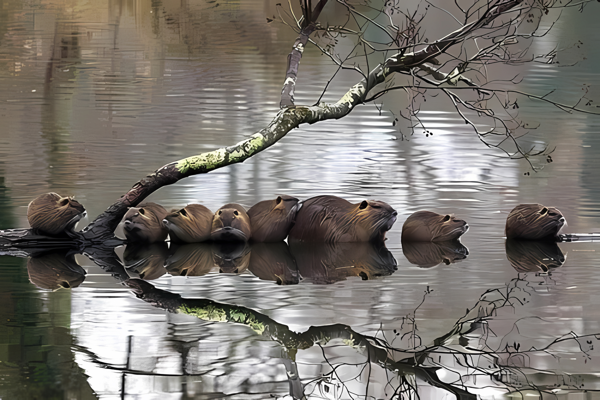

Бобри — це рід великих водних гризунів, які добре пристосовані до напівводяного способу життя.
У холодний період бобра рятує пласт підшкірного жиру, він допомагає зберігати внутрішнє тепло.
Забарвлення бобра починаються від попелясто-каштанового до темно-коричневої. Зустрічаються майже чорні бобри. У нього є цінне хутро, тому звіра майже знищили, як вид. Зараз вони знаходяться в Червоній книзі. Хвіст звірка схожий на весло, його розмір 35 см, а ширина 14-15 см. Хвіст покритий щетинками і великими лусочками.
Близько хвоста тварини є жировики і пара залоз, які виділяють специфічний запахх. Запах називається «бобровий струмінь». Він містить в собі матеріал, який показує на вік і стать бобра, за допомогою струменя бобер визначає зайняту їм територію. Боброва струмінь має індивідуальний запах. Він схожий з відбитками пальців людей. А також ця субстанція використовується в парфумерії.
На голові є невеликі вуха. Незважаючи на їх маленький розмір, тварина володіє гострим слухом. Коли річковий бобер знаходиться під водою, його ніздрі і вуха прикриваються, очі мають третє віко, яке захищає зіниці при зануренні у воду. Мигальна перетинка дає здатність тварині бачити в каламутній воді. Губи тваринного облаштовані таким чином, щоб вода до нього не потрапляла в рот, коли він гризе дерево.
Їхні великі легені і печінка забезпечують їм такі запаси повітря, що під водою бобри можуть залишатися 10-15 хвилин. За допомогою перетинчастих лап, широкого плаского хвоста і густого, водонепроникного хутра бобри пропливають під водою до 750 м. Бобри воліють селитися по берегах старих водойм, ставків та озер, де є наявність дерево-чагарникової рослинності. У заповіднику, сліди діяльності
цих тварин зустрічаються на кожному кроці, хоча насправді, на суші вони є досить незграбними. Бобри зводять 4 види типових будівель:
•нори — вони їх риють в обривистих берегах, високих і міцних;
•хатки з гілок і землі. Будують їх, якщо береги пологі і для нір не годяться;
•канали;
•греблі.
Для побудови загад бобри використовують в основному вільху, осику та вербу.
Підгризаючи дерево, ці гризуни діють так, щоб воно впало в потрібному напрямку. Потім звірі обгризають гілки і обробляють стовбур на шматки, які перетягують до місця майбутньої греблі. Одні шматки дерева бобер встромляє загостреним кінцем у дно,
інші закріплює між ними, щоб не віднесло течією при цьому працюючи і зубами, і лапами, і головою.
Греблю з боків бобри закріплюють рогульками. Проміжки в конструкції законопачують гілками, мулом, листям і глиною.
В одному з кінців греблі облаштовують стік, щоб паводком не зруйнувало всю споруду.

Живуть бобри поодинці або сім'ями. Повна сім'я складається з 5-8 особин. Сімейна ділянка іноді займається сім'єю протягом багатьох поколінь. Невелику водойму займає одна сім'я або холостий бобер.
Межі своєї території бобри мітять секретом мускусних залоз — бобрової струменем. Мітки наносяться на особливі горбики з бруду, мулу і гілок висотою 30 см і шириною до 1 м. Середовище, давно заселене
бобрами, є стійким, там мешкає чимало видів рослин та тварин, і така екосистема тривалий час підтримує баланс.
Між собою бобри спілкуються за допомогою пахучих міток, поз, ударів хвостом по воді і криків, що нагадують свист. При небезпеці бобер голосно вдаряє хвостом по воді і пірнає. Від води бобри рідко віддаляються більш ніж на 200 м.